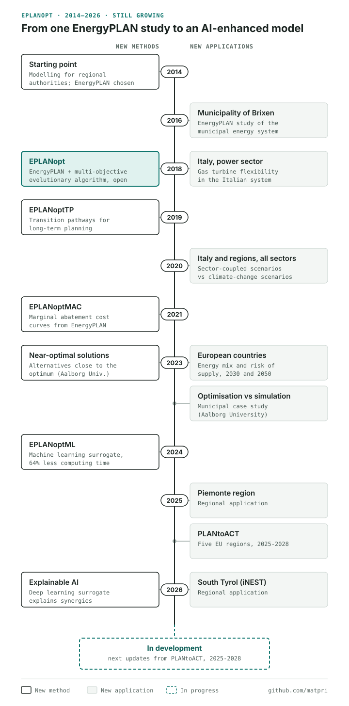

Model history · Updated as the model grows
EPLANopt: the story of an open-source energy system optimisation model
EPLANopt is the energy system model my group and I have been developing since 2018, on top of work that started in 2014. It began as a way to help regional administrations plan their energy transition and has since grown new methods, from transition pathways to machine learning and explainable AI, and new applications, from one municipality to European countries. This page tells the whole story, links every paper, and will be updated as the model keeps growing.

2014: why we started from EnergyPLAN
In 2014 I started working on energy system modelling at Eurac Research. The goal was practical: support regional public administrations in planning their energy transition. We looked for a tool that could represent a whole region hour by hour, with electricity, heating, transport and industry linked together, and chose EnergyPLAN, the simulation software developed at Aalborg University.
One of the first applications, in 2016, was an EnergyPLAN study for the municipality of Brixen (Bressanone) in South Tyrol.
2018: EPLANopt, EnergyPLAN plus an optimisation algorithm
EnergyPLAN simulates one scenario at a time: you describe an energy system, it tells you the costs, the emissions and how the system runs through the year. It does not search for the best scenario on its own, and the possible combinations of solar, wind, storage, heat pumps and efficiency are far too many to test by hand.
So we coupled EnergyPLAN with a multi-objective evolutionary algorithm. The algorithm proposes thousands of energy systems, EnergyPLAN simulates each one, and the algorithm keeps the best and evolves them. The result is a Pareto front: a set of optimal scenarios that trade total costs against CO2 emissions, instead of one single answer. We called it EPLANopt and released it as open-source code on GitHub (Energy, 2018; portfolio).
The first large application was the Italian power sector, where we also added the flexibility limits and extra costs of combined-cycle gas turbines (Energy, 2018).
2019–2021: from snapshots to pathways and cost curves
EPLANoptTP (2019). The first version optimised a single future year. EPLANoptTP optimises the transition pathway in successive steps, towards long-term planning targets (Applied Energy, 2019).
All sectors, national and regional scale (2020). We then applied EPLANopt with full sector coupling at Italian level and compared the optimal scenarios with climate-change scenarios (Energies, 2020). This work received the best paper award at the SDEWES 2020 conference. In the same year we applied the sector-coupled model at regional level.
EPLANoptMAC (2021). Policymakers often ask which measures cut CO2 at the lowest cost. EPLANoptMAC builds marginal abatement cost curves directly from EnergyPLAN through optimisation (Smart Energy, 2021; code). It received the best presentation award at the SES 2020 conference. Daniele Groppi and colleagues have used both tools for the Italian island of Favignana: EPLANopt for the island's energy transition and EPLANoptMAC for its maritime transport.
2023: alternatives, Europe and a reality check
Near-optimal solutions. The cheapest scenario is only one of many that cost almost the same. With Aalborg University we extended EPLANopt to find these near-optimal scenarios, which cost only slightly more than the optimum but can look very different, so policymakers can choose between real alternatives (Smart Energy, 2023).
European countries. We applied the model to several European countries to assess their optimal energy mix in 2030 and 2050 while accounting for the risk of supply (e-Prime, 2023).
Optimisation or simulation? Also with Aalborg University, we compared optimisation and simulation approaches on a municipal energy system, to see what each one adds in practice (Energy, 2023).
2024–2026: machine learning and explainable AI
A single EPLANopt run can call EnergyPLAN tens of thousands of times, and that limits how many uncertainties we can explore. In EPLANoptML (2024) a neural network learns to imitate EnergyPLAN and takes its place for most of the optimisation. For Italy, the computing time fell by 64% with almost identical optimal scenarios. The full story is in our article on the EnergyPLAN surrogate model, and the code is on GitHub.
In 2026 we went a step further with a deep learning surrogate and explainable AI, to understand why some combinations of technologies work better than others. It showed, for example, that heat pumps cut CO2 right away while Power-to-X needs a high share of renewables first. Read heat pumps first, Power-to-X later.
Long computing times and hard-to-explain results are two of the challenges we describe in our review of bottom-up energy system models. The AI work on EPLANopt is our attempt to address both.
Back to the regions: Piemonte, South Tyrol and PLANtoACT
The model has come back to where it started: regional energy planning. In 2025 we applied it to the Piemonte region, and in 2026 to South Tyrol within the iNEST project. Since 2025 it is also at the centre of LIFE PLANtoACT, the project I coordinate, which applies it in five European regions until 2028 and helps regions and municipalities move from energy plans to action.
Still in development
EPLANopt is not finished. The next methods and applications will come mostly from PLANtoACT, and I will update this page and the timeline when they are published. All the code is listed in my portfolio (EPLANopt, EPLANoptMAC, EPLANoptML) and on GitHub.
Frequently asked questions
What is EPLANopt?
EPLANopt is an energy system optimisation model that couples the EnergyPLAN simulation software, developed at Aalborg University, with a multi-objective evolutionary algorithm. It searches for the energy mixes that best balance total costs and CO2 emissions, and returns a set of optimal scenarios instead of a single one.
What is the difference between EnergyPLAN and EPLANopt?
EnergyPLAN simulates one energy system scenario at a time, hour by hour, across electricity, heating, transport and industry. EPLANopt runs EnergyPLAN thousands of times inside an optimisation loop, so it can search for the best combinations of technologies automatically.
Is EPLANopt open source?
Yes. The code of EPLANopt, EPLANoptMAC and EPLANoptML is on GitHub. EnergyPLAN itself is a separate tool that has to be downloaded from its website.